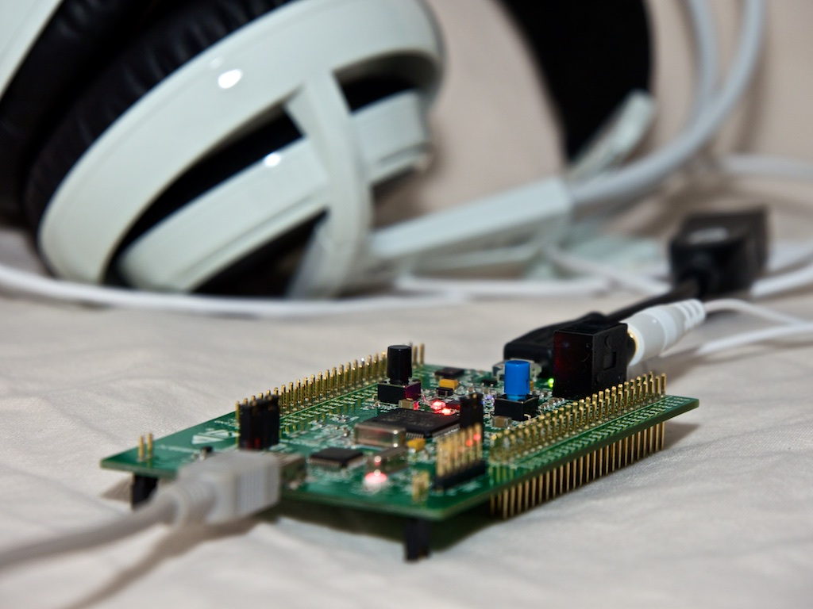

3D sound effect on stm32f4
STM32F4-3DSound is an application that runs on a STM32F4-Discovery board for playing a waveform file with 3D sound effects. It reads a mono sound waveform file from a USB stick, and processes the sound samples in real-time to produce a three-dimensional sound effect, then sends the output to stereo headphones. The 3D sound effect is controlled by the spatial alignment of the board, which uses the MEMS motion sensor to determine its position. The board can be rotated to the left, right, up and bottom, which will change the direction of the sound source. The rotation of the horizontal angle (azimuth) is limited from -90° (left) to 90° (right), and vertical angle (elevation) from -40° to 90°.
The application plays a waveform file from the root directory of a USB stick in a loop until the blue button is pressed, which plays the next waveform file. Only a mono sound file with sample rate of 44100 Hz will be accepted by the application, and headphones should be used to get the best result. Optionally, a serial connection (USART with TX=pin PA2, 115200 baud, 8N1) can be used to monitor the application (error messages, information about the waveform file to play, the angle position of the board, etc).
The sound effect is achieved using a technology called Head Related Transfer Function (HRTF), which introduces true 3D sound spatialisation using headphones. Citation from Wikipedia: “A head-related transfer function (HRTF) is a response that characterises how an ear receives a sound from a point in space; a pair of HRTFs for two ears can be used to synthesise a binaural sound that seems to come from a particular point in space. It is a transfer function, describing how a sound from a specific point will arrive at the ear (generally at the outer end of the auditory canal)”.
HRTF measurement is a time consuming and complex procedure that is performed with expensive equipment in an anechoic chamber. Some universities made HRTF measurement and publish it's result. For this application I use the HRTF measurements of a KEMAR dummy head microphone from MIT Media Lab and the HRTF measurements of Key Lab of Machine Perception (Ministry of Education), Peking University.
3D sound spatialisation is a computationally expensive algorithm, but nevertheless, a small inexpensive development board like STM32F4-Discovery with only 168 MHz cpu power and 192 KB RAM still has enough power to do all this HRTF calculation in real-time.
Oculus Rift recently announced at CES 2015 that they will support HRTF technology in their upcoming Oculus Audio SDK. If you don’t have Oculus, but want to try out 3D sound spatialisation with HRTF, then just try this application on your STM32F4-Discovery board, you will not be disappointed :)
$ git clone git@github.com:cahya-wirawan/stm32f4-3dsound.git
$ cd stm32f4-3dsound
$ make
The binary (stm32f4-3dsound.bin, .hex, .elf) will be created in the build/ sub-directory. A pre-compiled binary (version 0.3) can also be downloaded from this website.
There are four HRTF databases currently included in the source code. This database can be selected in cwHrtfArray.h: